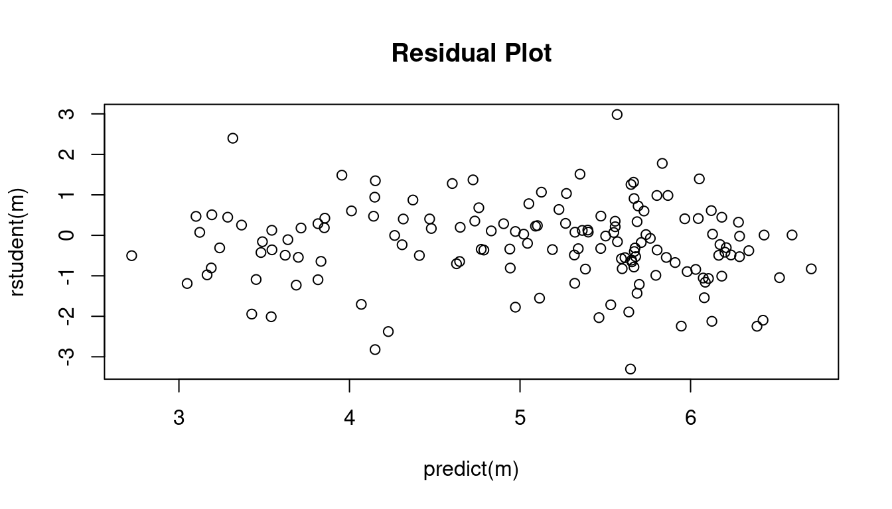
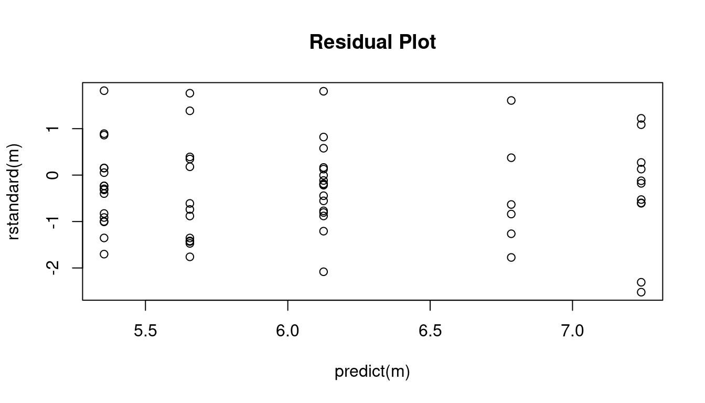

Monday, Mar 25
You can also download a PDF copy of this lecture.
Distributions for Over-dispersion
One way to model over-dispersion is to assume a model of the form \[ g[E(Y_i)] = \beta_0 + \beta_1 x_{i1} + \cdots + \beta_k x_{ik} + \zeta_i, \] where \(\zeta_i\) is an unobserved unit-specific random quantity that represents one or more unobserved explanatory variables that vary over units.
The Negative Binomial Distribution
Suppose that \(Y_i\) has a Poisson distribution conditional on \(\zeta_i\), and \(e^{\zeta_i}\) has a gamma distribution such that \(E(e^{\gamma_i}) = 1\) and \(\text{Var}(e^{\gamma_i}) = \alpha > 0\). The marginal distribution of \(Y_i\) is then a negative binomial distribution, with mean structure \[ g[E(Y_i)] = \eta_i, \] and variance structure \[ \text{Var}(Y_i) = E(Y_i) + \alpha E(Y_i)^2 \ge E(Y_i). \] The Poisson distribution is a special case where \(\alpha = 0\). This variance structure does not have the form \[ \text{Var}(Y_i) = \phi V[E(Y_i)] \] unless \(\alpha\) is known (which it normally is not), so this model is not a traditional GLM. But we can make inferences using maximum likelihood.
Example: Consider our model for the trawl fishing data. Here we will consider a negative binomial regression model.
library(COUNT)
data(fishing)
library(MASS) # for the glm.nb function (note there is no family argument)
m <- glm.nb(totabund ~ period * meandepth + offset(log(sweptarea)),
link = log, data = fishing)
d <- expand.grid(sweptarea = 1, period = levels(fishing$period),
meandepth = seq(800, 5000, length = 100))
d$yhat <- predict(m, newdata = d, type = "response")
p <- ggplot(fishing, aes(x = meandepth, y = totabund/sweptarea)) +
geom_point(alpha = 0.5) + facet_wrap(~ period) + theme_minimal() +
labs(x = "Mean Trawl Depth (meters)",
y = "Fish Caught Per Square Meter Trawled") +
geom_line(aes(y = yhat), data = d)
plot(p)summary(m) # note that what glm.nb calls theta equals 1/alpha
Call:
glm.nb(formula = totabund ~ period * meandepth + offset(log(sweptarea)),
data = fishing, link = log, init.theta = 1.961162176)
Coefficients:
Estimate Std. Error z value Pr(>|z|)
(Intercept) -3.25e+00 1.59e-01 -20.40 <2e-16 ***
period2000-2002 -6.19e-01 2.73e-01 -2.27 0.023 *
meandepth -1.04e-03 5.92e-05 -17.58 <2e-16 ***
period2000-2002:meandepth 7.95e-05 1.01e-04 0.79 0.432
---
Signif. codes: 0 '***' 0.001 '**' 0.01 '*' 0.05 '.' 0.1 ' ' 1
(Dispersion parameter for Negative Binomial(1.961) family taken to be 1)
Null deviance: 471.79 on 146 degrees of freedom
Residual deviance: 159.31 on 143 degrees of freedom
AIC: 1763
Number of Fisher Scoring iterations: 1
Theta: 1.961
Std. Err.: 0.219
2 x log-likelihood: -1752.713 plot(predict(m), rstudent(m), main = "Residual Plot") Interestingly inferences based on the negative binomial model are very similar to those obtained using quasi-likelihood assuming the variance structure \(V(Y_i) = \phi E(Y_i)^2\). Here are the parameter estimates, standard errors, and confidence intervals.
m.negbn <- glm.nb(totabund ~ period * meandepth + offset(log(sweptarea)),
link = log, data = fishing)
m.quasi <- glm(totabund ~ period * meandepth + offset(log(sweptarea)),
family = quasi(link = "log", variance = "mu^2"), data = fishing)
cbind(summary(m.negbn)$coefficients, confint(m.negbn)) Estimate Std. Error z value Pr(>|z|) 2.5 % 97.5 %
(Intercept) -3.249e+00 1.592e-01 -20.4044 1.529e-92 -3.5603979 -2.9274102
period2000-2002 -6.187e-01 2.726e-01 -2.2695 2.324e-02 -1.1815413 -0.0436165
meandepth -1.041e-03 5.923e-05 -17.5844 3.245e-69 -0.0011578 -0.0009213
period2000-2002:meandepth 7.955e-05 1.013e-04 0.7855 4.322e-01 -0.0001333 0.0002952cbind(summary(m.quasi)$coefficients, confint(m.quasi)) Estimate Std. Error t value Pr(>|t|) 2.5 % 97.5 %
(Intercept) -3.250e+00 1.592e-01 -20.4180 3.187e-44 -3.5609660 -2.9294775
period2000-2002 -6.041e-01 2.720e-01 -2.2212 2.791e-02 -1.1672726 -0.0287948
meandepth -1.041e-03 5.866e-05 -17.7403 5.988e-38 -0.0011552 -0.0009217
period2000-2002:meandepth 7.272e-05 9.992e-05 0.7278 4.679e-01 -0.0001381 0.0002870Here are the estimates of the rate ratios for period at several different depths.
library(trtools)
contrast(m.negbn,
a = list(meandepth = c(1000,2000,3000,4000,5000), period = "2000-2002", sweptarea = 1),
b = list(meandepth = c(1000,2000,3000,4000,5000), period = "1977-1989", sweptarea = 1),
cnames = c("1000m","2000m","3000m","4000m","5000m"), tf = exp) estimate lower upper
1000m 0.5832 0.4017 0.8468
2000m 0.6315 0.4868 0.8193
3000m 0.6838 0.5184 0.9020
4000m 0.7404 0.4928 1.1125
5000m 0.8017 0.4494 1.4301contrast(m.quasi,
a = list(meandepth = c(1000,2000,3000,4000,5000), period = "2000-2002", sweptarea = 1),
b = list(meandepth = c(1000,2000,3000,4000,5000), period = "1977-1989", sweptarea = 1),
cnames = c("1000m","2000m","3000m","4000m","5000m"), tf = exp) estimate lower upper
1000m 0.5878 0.4046 0.8540
2000m 0.6321 0.4869 0.8206
3000m 0.6798 0.5173 0.8935
4000m 0.7311 0.4905 1.0897
5000m 0.7863 0.4458 1.3867Here are the tests (likelihood ratio and \(F\)) for the “effect” of period. The null model assumes that expected abundance per unit area trawled is the same each period at a given depth. Put another way, the null model assumes that the rate ratio for period is one for all depths.
m.negbn.null <- glm.nb(totabund ~ meandepth + offset(log(sweptarea)),
link = log, data = fishing)
anova(m.negbn.null, m.negbn)Likelihood ratio tests of Negative Binomial Models
Response: totabund
Model theta Resid. df 2 x log-lik. Test df LR stat.
1 meandepth + offset(log(sweptarea)) 1.832 145 -1764
2 period * meandepth + offset(log(sweptarea)) 1.961 143 -1753 1 vs 2 2 11.11
Pr(Chi)
1
2 0.003872m.quasi.null <- glm(totabund ~ meandepth + offset(log(sweptarea)),
family = quasi(link = "log", variance = "mu^2"), data = fishing)
anova(m.quasi.null, m.quasi, test = "F")Analysis of Deviance Table
Model 1: totabund ~ meandepth + offset(log(sweptarea))
Model 2: totabund ~ period * meandepth + offset(log(sweptarea))
Resid. Df Resid. Dev Df Deviance F Pr(>F)
1 145 90.5
2 143 84.5 2 5.94 5.74 0.004 **
---
Signif. codes: 0 '***' 0.001 '**' 0.01 '*' 0.05 '.' 0.1 ' ' 1Note: When using anova for a negative binomial model
(estimated using the glm.nb function) we omit the
test = "LRT" option which we use for generalized linear
models. Somewhat confusingly, the anova function will do a
likelihood ratio test for a glm.nb object, but will throw
an error if we try to change the test type (even if we ask for a
likelihood ratio test).
Heteroscedastic Consistent (Robust) Standard Errors
An alternative is to accept that the specified variance structure is incorrect and estimate standard errors in a way that provides consistent estimates despite the misspecification of the variance structure.1
Note: I needed to specify the data set as
trtools::rotifer below as there is a data set of the same
name in another package that was loaded earlier. It’s actually the same
data but in a different format from the data frame in the
trtools package.
Example: Consider the logistic regression model for
the rotifer data from the trtools
package.
m <- glm(cbind(y, total - y) ~ species + density + species:density,
family = binomial, data = trtools::rotifer)Here are the parameter estimates and standard errors, with and without using the robust standard error estimates.
library(sandwich) # for the vcovHC function
library(lmtest) # for coeftest and coefci functions
cbind(summary(m)$coefficients, confint(m)) Estimate Std. Error z value Pr(>|z|) 2.5 % 97.5 %
(Intercept) -114.352 4.034 -28.3454 9.534e-177 -122.420 -106.598
speciespm 4.629 6.598 0.7016 4.830e-01 -8.464 17.431
density 108.746 3.857 28.1910 7.535e-175 101.332 116.460
speciespm:density -3.077 6.329 -0.4862 6.268e-01 -15.354 9.487cbind(coeftest(m, vcov = vcovHC), coefci(m, vcov = vcovHC)) Estimate Std. Error z value Pr(>|z|) 2.5 % 97.5 %
(Intercept) -114.352 18.31 -6.2449 4.240e-10 -150.24 -78.46
speciespm 4.629 29.91 0.1548 8.770e-01 -53.99 63.25
density 108.746 17.50 6.2137 5.175e-10 74.44 143.05
speciespm:density -3.077 28.82 -0.1068 9.150e-01 -59.57 53.42An alternative to using coeftest and coefci
is lincon(m, fcov = vcovHC). Now compare our inferences for
the odds ratios for the effect of a 0.01 increase in density.
contrast(m,
a = list(density = 0.02, species = c("kc","pm")),
b = list(density = 0.01, species = c("kc","pm")),
cnames = c("kc","pm"), tf = exp) estimate lower upper
kc 2.967 2.751 3.200
pm 2.877 2.607 3.174contrast(m,
a = list(density = 0.02, species = c("kc","pm")),
b = list(density = 0.01, species = c("kc","pm")),
cnames = c("kc","pm"), tf = exp, fcov = vcovHC) estimate lower upper
kc 2.967 2.105 4.181
pm 2.877 1.836 4.507For comparison consider also the results when using quasi-likelihood.
m <- glm(cbind(y, total - y) ~ species + density + species:density,
family = quasibinomial, data = trtools::rotifer)
cbind(summary(m)$coefficients, confint(m)) Estimate Std. Error t value Pr(>|t|) 2.5 % 97.5 %
(Intercept) -114.352 14.95 -7.6472 4.736e-09 -146.02 -87.01
speciespm 4.629 24.46 0.1893 8.509e-01 -46.15 51.31
density 108.746 14.30 7.6056 5.358e-09 82.60 139.02
speciespm:density -3.077 23.46 -0.1312 8.964e-01 -47.81 45.70contrast(m,
a = list(density = 0.02, species = c("kc","pm")),
b = list(density = 0.01, species = c("kc","pm")),
cnames = c("kc","pm"), tf = exp) estimate lower upper
kc 2.967 2.220 3.965
pm 2.877 1.973 4.195Recall that heteroscedastic consistent standard errors are best used with generous sample sizes. For modest sample sizes (such as this experiment) quasi-likelihood is probably better.
Generalized Linear Models Revisited
Recall that a generalized linear model (GLM) has the form \[ g[E(Y_i)] = \underbrace{\beta_0 + \beta_1 x_{i1} + \beta_1 x_{i2} + \cdots + \beta_k x_{ik}}_{\eta_i}, \] where \(g\) is the link function and \(\eta_i\) is the linear predictor or systematic component. This is the mean structure of the model.
The variance structure of a GLM is \[ \text{Var}(Y_i) = \phi V[E(Y_i)], \] where \(\phi\) is a dispersion parameter and \(V\) is the variance function.
If we define \(h = g^{-1}\) so that \(E(Y_i) = h(\eta_i)\) we can write a GLM concisely as \[\begin{align} E(Y_i) & = h(\eta_i) \\ \text{Var}(Y_i) & = \phi V[h(\eta_i)] \end{align}\] to define the mean structure and a variance structure for \(Y_i\), respectively, by specifying the mean and variance of \(Y_i\) to be functions of \(x_{i1}, x_{i2}, \dots, x_{ik}\).
The specification of a generalized linear model therefore requires three components.
The systematic component \(\eta_i = \beta_0 + \beta_1 x_{i1} + \beta_1 x_{i2} + \cdots + \beta_k x_{ik}\).
The link function \(g\) for the mean structure \(g[E(Y_i)] = \eta_i\).
The distribution of the response variable \(Y_i\), which implies the variance structure \(\text{Var}(Y_i) = \phi V[E(Y_i)]\), or we can specify the variance structure directly.
Four common distributions from the exponential family of
distributions (normal/Gaussian, Poisson, gamma, and inverse-Gaussian)
imply variance structures of the form \[
\text{Var}(Y_i) = \phi E(Y_i)^p
\] The values of \(p\) are \(p\) = 0 (normal/Gaussian), \(p\) = 1 (Poisson if \(\phi = 1\)), \(p\) = 2 (gamma), and \(p\) = 3 (inverse-Gaussian). Also note that
when using quasi-likelihood we can use other values of \(p\) via the tweedie function
from the statmod package.
GLMs for Gamma-Distributed Response Variables
If \(Y_i\) has a gamma distribution then \(Y_i\) is a positive and continuous random variable, and \(\text{Var}(Y_i) = \phi E(Y_i)^2\). Such models are sometimes suitable for response variables that are bounded below by zero and right-skewed. Common link functions include the log and inverse functions. With a log link function we have a mean structure like that for Poisson regression where \[ \log E(Y_i) = \beta_0 + \beta_1 x_{i1} + \beta_2 x_{i2} + \cdots + \beta_k x_{ik}, \] or \[ E(Y_i) = \exp(\beta_0 + \beta_1 x_{i1} + \beta_2 x_{i2} + \cdots + \beta_k x_{ik}), \] so the effects of explanatory variables and contrasts can be interpreted by applying the exponential function \(e^x\) and interpreting the effects as multiplicative factors or percent increase/decrease or percent larger/smaller.
Example: Consider again the cancer survival time data.
library(Stat2Data)
data(CancerSurvival)
CancerSurvival$Organ <- with(CancerSurvival, reorder(Organ, Survival, mean))
p <- ggplot(CancerSurvival, aes(x = Organ, y = Survival)) +
geom_jitter(height = 0, width = 0.25) +
labs(y = "Survival Time (Days)") + theme_classic()
plot(p)A gamma model might be appropriate here. First consider a model with a log link function.
m <- glm(Survival ~ Organ, family = Gamma(link = log), data = CancerSurvival)
cbind(summary(m)$coefficients, confint(m)) Estimate Std. Error t value Pr(>|t|) 2.5 % 97.5 %
(Intercept) 5.3546 0.2504 21.3854 1.773e-29 4.90101 5.889
OrganStomach 0.3013 0.3804 0.7923 4.314e-01 -0.44036 1.068
OrganColon 0.7709 0.3541 2.1772 3.348e-02 0.06991 1.472
OrganOvary 1.4302 0.4902 2.9174 4.987e-03 0.52462 2.486
OrganBreast 1.8867 0.3995 4.7228 1.479e-05 1.11572 2.702We might compare the survival times to the type of cancer with lowest expected survival time.
contrast(m, tf = exp,
a = list(Organ = c("Stomach","Colon","Ovary","Breast")),
b = list(Organ = "Bronchus"),
cnames = paste(c("Stomach","Colon","Ovary","Breast"), "/", "Bronchus", sep = "")) estimate lower upper
Stomach/Bronchus 1.352 0.6314 2.893
Colon/Bronchus 2.162 1.0644 4.391
Ovary/Bronchus 4.180 1.5671 11.147
Breast/Bronchus 6.597 2.9663 14.673Now suppose we specify the same variance structure directly. Note that the results are identical.
m <- glm(Survival ~ Organ, family = quasi(link = log, variance = "mu^2"), data = CancerSurvival)
cbind(summary(m)$coefficients, confint(m)) Estimate Std. Error t value Pr(>|t|) 2.5 % 97.5 %
(Intercept) 5.3546 0.2504 21.3854 1.773e-29 4.90101 5.889
OrganStomach 0.3013 0.3804 0.7923 4.314e-01 -0.44036 1.068
OrganColon 0.7709 0.3541 2.1772 3.348e-02 0.06991 1.472
OrganOvary 1.4302 0.4902 2.9174 4.987e-03 0.52462 2.486
OrganBreast 1.8867 0.3995 4.7228 1.479e-05 1.11572 2.702contrast(m, tf = exp,
a = list(Organ = c("Stomach","Colon","Ovary","Breast")),
b = list(Organ = "Bronchus"),
cnames = paste(c("Stomach","Colon","Ovary","Breast"), "/", "Bronchus", sep = "")) estimate lower upper
Stomach/Bronchus 1.352 0.6314 2.893
Colon/Bronchus 2.162 1.0644 4.391
Ovary/Bronchus 4.180 1.5671 11.147
Breast/Bronchus 6.597 2.9663 14.673Naturally we should check the residuals to see if the variance structure is reasonable.
plot(predict(m), rstandard(m), main = "Residual Plot")
Example: Consider the following observations of dry weight (in grams) and rostro-carinal length (in mm) of a species of barnacles sampled from the inter-tidal zones near Punta Lens and Punta de la Barca along the Atlantic coast of Spain.
library(npregfast)
head(barnacle) DW RC F
1 0.14 9.5 barca
2 0.00 2.4 barca
3 0.42 13.1 barca
4 0.01 3.7 barca
5 0.03 5.6 barca
6 1.56 18.6 barcap <- ggplot(barnacle, aes(x = RC, y = DW))
p <- p + geom_point(alpha = 0.25) + facet_wrap(~ F) + theme_minimal()
p <- p + labs(x = "Rostro-Carinal Length (mm)", y = "Dry Weight (g)")
plot(p)
A common allometric regression model would have the form \[
E(Y_i) = ax_i^b
\] where \(Y_i\) is the dry
weight for the \(i\)-th observation,
and \(x_i\) is the rostro-carinal
length for the \(i\)-th observation. We
can also write this as \[
\log E(Y_i) = \log a + b\log x_i
\] or, equivalently, \[
E(Y_i) = \exp(\log a + b\log x_i)
\]
or \[
E(Y_i) = \exp(\beta_0 + \beta_1 \log x_i)
\] where \(\beta_0 = \log a\)
and \(\beta_1 = b\). This is basically
a log-linear model since we can write \[
\log E(Y_i) = \beta_0 + \beta_1 \log x_i.
\] Because dry weight is continuous and positive, with the
variability appearing to increase with the expected dry weight, we might
specify a gamma distribution for dry weight.
barnacle <- subset(barnacle, DW > 0) # remove observations of zero weight to avoid errors
m <- glm(DW ~ F + log(RC) + F:log(RC), family = Gamma(link = log), data = barnacle)
summary(m)$coefficients Estimate Std. Error t value Pr(>|t|)
(Intercept) -8.06129 0.03898 -206.786 0.0000000
Flens -0.15688 0.05724 -2.741 0.0061837
log(RC) 2.84234 0.01585 179.296 0.0000000
Flens:log(RC) 0.07884 0.02315 3.405 0.0006744d <- expand.grid(F = c("barca","lens"), RC = seq(2.3, 24, length = 100))
d$yhat <- predict(m, newdata = d, type = "response")
p <- p + geom_line(aes(y = yhat), color = "red", data = d)
plot(p)
# effect of a 20% increase in RC
contrast(m, tf = exp,
a = list(F = c("barca","lens"), RC = 6),
b = list(F = c("barca","lens"), RC = 5),
cnames = c("barca","lens")) estimate lower upper
barca 1.679 1.670 1.689
lens 1.703 1.693 1.714# comparing the two locations at different values of RC
contrast(m, tf = exp,
a = list(F = "lens", RC = c(10,15,20)),
b = list(F = "barca", RC = c(10,15,20)),
cnames = c("10mm","15mm","20mm")) estimate lower upper
10mm 1.025 1.004 1.046
15mm 1.058 1.034 1.083
20mm 1.083 1.048 1.118Checking the residuals.
plot(predict(m), rstudent(m), main = "Residual Plot")
abline(-2,0)
abline(2,0) Note: Eliminating a couple of observations due to having a zero dry
weight is not of much consequence here since there are so many
observations. But if there were fewer observations this would not be a
good idea. A better approach would be to just specify the same model
using
Note: Eliminating a couple of observations due to having a zero dry
weight is not of much consequence here since there are so many
observations. But if there were fewer observations this would not be a
good idea. A better approach would be to just specify the same model
using quasi. Note that using quasi with
variance = "mu^2" is effectively equivalent to using
family = gamma.
m <- glm(DW ~ F + log(RC) + F:log(RC), data = barnacle,
family = quasi(link = "log", variance = "mu^2"))
summary(m)$coefficients Estimate Std. Error t value Pr(>|t|)
(Intercept) -8.06129 0.03898 -206.786 0.0000000
Flens -0.15688 0.05724 -2.741 0.0061837
log(RC) 2.84234 0.01585 179.296 0.0000000
Flens:log(RC) 0.07884 0.02315 3.405 0.0006744# effect of a 20% increase in RC
contrast(m, tf = exp,
a = list(F = c("barca","lens"), RC = 6),
b = list(F = c("barca","lens"), RC = 5),
cnames = c("barca","lens")) estimate lower upper
barca 1.679 1.670 1.689
lens 1.703 1.693 1.714# comparing the two locations at different values of RC
contrast(m, tf = exp,
a = list(F = "lens", RC = c(10,15,20)),
b = list(F = "barca", RC = c(10,15,20)),
cnames = c("10mm","15mm","20mm")) estimate lower upper
10mm 1.025 1.004 1.046
15mm 1.058 1.034 1.083
20mm 1.083 1.048 1.118Checking the residuals.
plot(predict(m), rstudent(m), main = "Residual Plot")
abline(-2,0)
abline(2,0)Inverse-gaussian GLMs are similar. There the variance increases a bit
faster with the expected response. To estimate such a model use
family = inverse.gaussian. An equivalent model is to use
quasi with variance = mu^3.
Consistency is a rather technical condition, but roughly speaking a consistent estimator is one such that its sampling distribution becomes increasingly concentrated around the value being estimated as \(n\) increases.↩︎